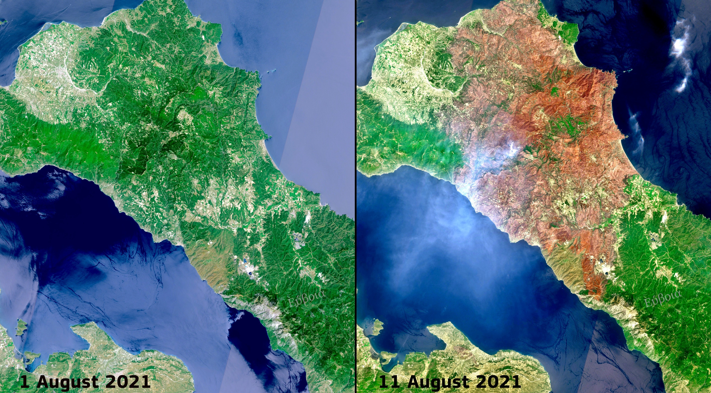

Analisi satellitare dell'impatto ambientale di uno dei più gravi disastri naturali in Europa
Nell'agosto 2021, l'isola greca di Eubea (Evia), la seconda più grande della Grecia, è stata colpita da una serie di incendi boschivi catastrofici che hanno segnato uno dei peggiori disastri ambientali nella storia moderna dell'Europa. Questi eventi hanno messo in luce gli effetti drammatici del cambiamento climatico e le sfide nella gestione delle emergenze.
Esplora la mappa interattiva per comprendere l'estensione geografica dell'incendio. Utilizza i controlli per alternare tra la visualizzazione prima e dopo l'evento, e per vedere le aree colpite.
La mappa evidenzia come l'incendio abbia colpito principalmente la parte settentrionale dell'isola, distruggendo vaste aree di foresta di pini e uliveti secolari. Le zone rosse nella visualizzazione "Aree danneggiate" mostrano le regioni con la più grave perdita di vegetazione.
L'incendio di Eubea del 2021 è stato parte di una più ampia ondata di incendi che ha colpito la Grecia durante un'estate particolarmente calda e secca, con temperature che hanno superato i 45°C in molte regioni.
L'evento è stato alimentato da una combinazione di fattori:
L'incendio ha avuto conseguenze devastanti:
Le immagini satellitari ad alta risoluzione di Copernicus Sentinel-2 mostrano chiaramente l'entità della devastazione. Utilizza lo slider per confrontare lo stato della vegetazione prima e dopo l'incendio.
Le immagini sono state acquisite dal satellite Sentinel-2 il 15 luglio 2021 (prima) e il 20 agosto 2021 (dopo). La composizione a colori naturali (bande 4, 3, 2) permette una chiara distinzione tra vegetazione sana (verde), aree bruciate (marroni/neri) e zone urbane (grigio).
L'Indice di Vegetazione di Differenza Normalizzata (NDVI) è un indicatore chiave per valutare la salute della vegetazione. Confrontando i valori NDVI prima e dopo l'incendio, possiamo quantificare con precisione l'impatto sulle foreste.
L'NDVI (Normalized Difference Vegetation Index) è calcolato come (NIR - Red) / (NIR + Red), dove NIR è la riflettanza nell'infrarosso vicino e Red nella banda del rosso. Valori vicini a +1 indicano vegetazione sana, mentre valori negativi suggeriscono suolo nudo o acqua.
Oltre ai danni immediati, l'incendio ha avuto impatti duraturi sull'ecosistema e sulla comunità locale:
L'evento ha portato a importanti riflessioni sulla gestione del territorio e la prevenzione incendi in un'era di cambiamento climatico, con nuove politiche adottate a livello nazionale ed europeo.